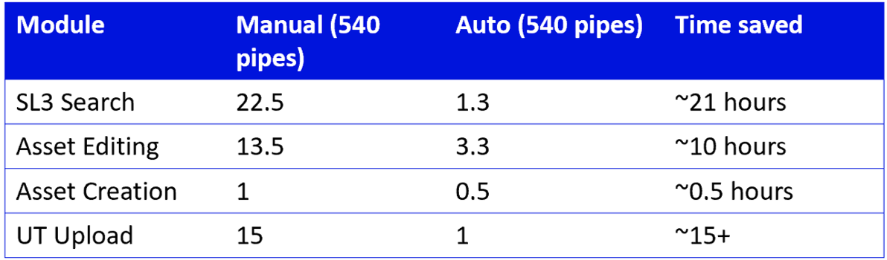
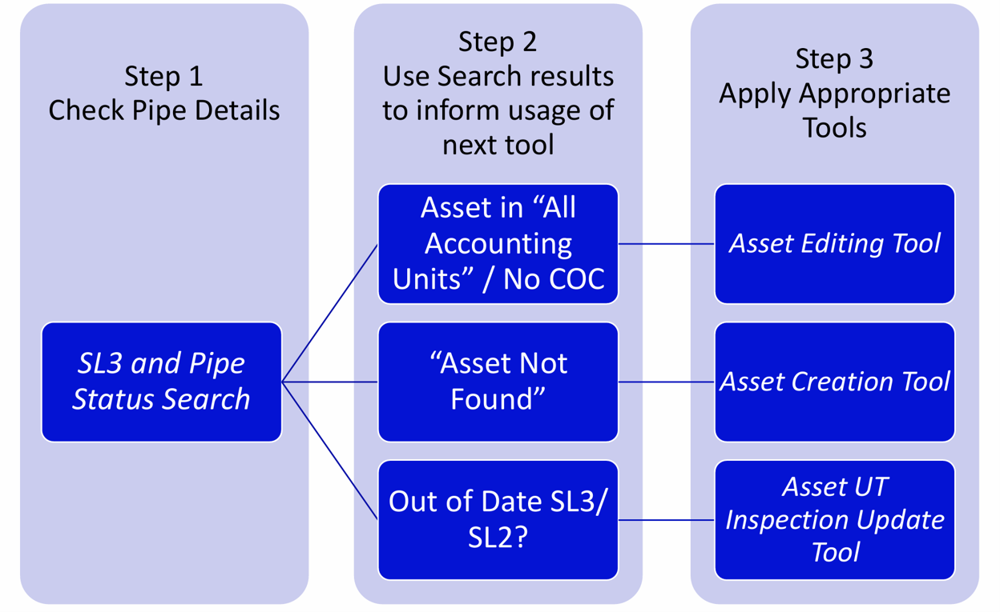

Automated and improved traceability process for piping paperwork
@ SLB Schlumberger (Labuan) Reservoir Performance Testing Intern (5/26-8/26)

Pipework Python Automation Scripting Suite
Outcome
~46 hours saved per 540-pipe job · 204,000+ assets supported · built for the wider East Asia Group

At SLB, I was a Reservoir Performance Testing intern responsible for equipment traceability: tracking hundreds of unique parts across every job, for every client, in our department's TestTrack database. Over half of any job's parts were pipework, tracked the same way each time, but TestTrack only let you search and update pipes one at a time.
I built four Python tools that read from Excel, drive TestTrack through the browser, and process pipes in batches instead of one by one. On a 540-pipe job, they cut the combined manual time for search, editing, creation, and UT upload from about 52 hours to about 6, saving roughly 46 hours.
Program Architecture
The four tools aren't independent. The SL3 search tool is the entry point: it checks every pipe's status, then its result determines which of the other three tools is actually needed. A pipe with no COC or listed under "All Accounting Units" goes to the editing tool. A pipe TestTrack can't find at all goes to the creation tool. A pipe with an outdated SL3 or SL2 goes to the UT inspection update tool.

This meant I only had to solve the login, search, and asset-matching logic once, then reuse it across all four scripts, rather than rebuilding it four times.
Experience, Learnings, and Skills
Not every tool automates the same way. That distinction was one of the more important calls I made on this project.
Search, status checks, and downloading reports are low risk. If something goes wrong, I just run it again. So the SL3 search tool runs fully unattended once I log in.
Creating a new asset is a different kind of risk. Very few people at SLB can delete a wrongly created pipe once it exists in TestTrack. So the creation tool pre-fills every field from Excel, including the asset code and the COC file, then pauses for up to an hour so I can check it before submitting. I only turned that review step off once I'd verified the asset-code logic held up across enough real cases to trust it unattended.
The same principle runs through the other two tools. The editing tool updates existing records but still requires a matched asset before touching anything. The UT upload tool cross-checks the serial number inside each PDF against the serial number in Excel before using it. A PDF that doesn't match anything gets moved into a separate folder instead of being silently applied to the wrong asset.
Across all four, I built in recovery for the ordinary failures that come with a multi-hour run: the workbook saves every 9 rows, so a crash partway through doesn't mean starting over. A search that doesn't find an asset immediately retries, then checks whether it's decommissioned, then checks across all accounting units before flagging it for review. Stale references in the browser, a common Selenium failure when a page updates mid-action, get caught and retried instead of crashing the run.
I also built a parallel-processing path that splits the input workbook across multiple TestTrack sessions and merges the results back into one file. It currently runs single-session. I built and tested the architecture but haven't had a job large enough, or enough confidence in how TestTrack handles concurrent logins, to rely on it in production.
Motivations
Reservoir performance testing wasn't the industry I expected to end up in, and my assigned role, equipment traceability, was mostly manual record-keeping. It wasn't glamorous, but it was necessary, and I noticed it was taking up more of my time than its actual complexity justified.
Rather than treat that as just the job, I built something. Automating the parts of my role that didn't need a person freed up time for higher-value work, and gave the rest of the department, current interns and future ones, a tool they could use too.
Technical Details
All four scripts share a common foundation: the same login flow, the same asset-search logic, and the same fallback when an asset isn't found under the default accounting unit. That logic is refactored across files rather than rewritten each time.
Search and Retrieval
The SL3 tool reads a list of serial numbers from Excel and checks each one for a completed SL3 (major inspection) report, flagging cases where an inspection is still in progress. A pipe can go up to five years without reinspection after a Major inspection, so knowing the most recent SL3 date is what actually matters for planning. The tool extracts that date, generates a renamed PDF copy of the report, and writes the date back into Excel.
If an asset isn't found under the default accounting unit, the tool checks whether it's decommissioned first, then retries across all accounting units before giving up. A decommissioned asset and a missing one need different follow-up, so getting that order right matters.
Validation
The UT upload tool reads inspection PDFs with pdfplumber and extracts the thickness readings at each point, but only after confirming the serial number inside the PDF matches the serial number in Excel. Reports that don't match get moved to a separate folder automatically. The parser currently supports up to four measurement points (A to D); more than that needs an update to the extraction logic, a known limitation I documented rather than tried to work around silently.
Risk-Tiered Automation
Search and download is low risk and fully reversible, so it runs unattended. Creating a new asset is not: very few people can delete one once it exists. So that tool pre-fills every field, then pauses for up to an hour for a human check before submitting. I switched off that review step only after validating the asset-code logic against enough real cases to trust it.
Resilience
A run against hundreds of assets can take hours. The workbook saves every 9 rows, so a crash doesn't mean starting over. Stale Selenium element references are caught and retried instead of crashing the run. Every asset that fails for any reason gets logged with its own status in Excel, and the batch keeps going.
Built for Scale, Not Yet Fully Exercised
The search tool includes a parallel path that splits the input workbook across multiple worker sessions and merges the results back into one file. It runs single-session for now. The architecture is built and tested, but I haven't had a job large enough to justify running it concurrently in production.
Improvements
Given more time, I would have liked to:
- Complete the automatic UT thickness reading upload; the extraction and validation logic is built, but the final upload step is still partial
- Extend PDF parsing to support inspection reports with more than four measurement points
- Replace fixed delays with fully explicit waits throughout, to make the automation more robust to TestTrack's own loading behavior
- Add resume-from-last-successful-asset recovery after an unexpected interruption
- Validate the multi-session parallel path on a real large-scale job
Phone
(000) 000-0000 x12387Address
1234 Somewhere Road #5432Nashville, TN 00000
United States of America